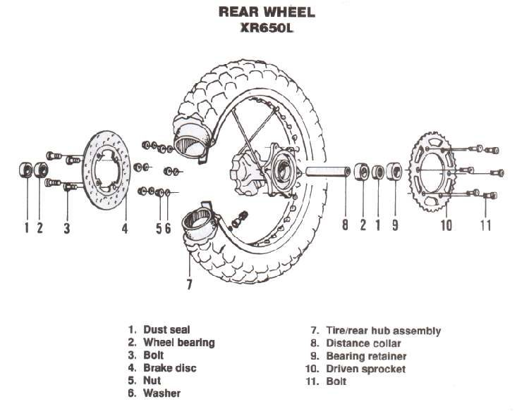

A knock or clunk from the back of the bike when going over bumps. It may be a loose shock bolt, worn rubber bushes in the shock eyes, swingarm pivot play, a rear that bottoms out, a slack chain slapping the swingarm, or something nearby: a loose exhaust, number plate, top box or mudguard. If the clunk happens when you open or close the throttle rather than over bumps, it is more likely the cush drive or chain.
Is it safe to ride?
No, until you have checked the shock bolts and swingarm. A loose shock or swingarm can fail.
Quick checks first
- Bounce the rear with your hand and listen.
- Check both shock bolts top and bottom, and the swingarm pivot nut.
- Check chain slack.
- Check exhaust, mudguard, number plate, rack and top box mounts.
- Does it clunk over bumps, or when you open and close the throttle?
Diagnose it step by step
1Does the clunk happen when you open or close the throttle, more than over bumps?
- Yes: go to Clunk or snatch from the rear wheel when opening and closing the throttle.
- No: go to step 2.
2Is a shock bolt or the pivot nut loose?
- Yes: do not ride. Tighten to the model torque. No shock torque is given here because the K-Light 125 manual lists two values for the upper nut. See Check chassis fasteners.
- No: go to step 3.
3With the rear wheel lifted, does the shock eye move on its bolt, or the swingarm move sideways?
- Shock eye: worn bushes. Check the rear shock absorbers.
- Swingarm: Swingarm moves sideways or has play.
- Neither: go to step 4.
4Is the chain slack too large, so it slaps the swingarm over bumps?
- Yes: Check and adjust chain slack (K-Light 125: 20 to 40 mm, bike upright).
- No: go to step 5.
5Does the rear hit its stops with a load (the clunk comes on big bumps)?
- Yes: see Rear sits too low.
- No: go to step 6.
6Is the exhaust, mudguard, rack or a panel loose?
- Yes: Check exhaust mounts and heat shields and Check chassis fasteners.
- No: check rear wheel bearings with Check wheel bearings.
Causes, most likely first
| Cause | How to confirm | Fix |
|---|---|---|
| Loose shock bolt or pivot nut | Fastener moves | Tighten to model torque |
| Worn shock eye bushes | Shock eye moves on bolt | Replace bushes or shock |
| Loose exhaust, rack or panel | Noise when part is shaken | Check chassis fasteners |
| Slack chain | Chain slaps swingarm | Check and adjust chain slack |
| Swingarm play | Sideways movement at pivot | Check the swingarm pivot |
| Bottoming out | Clunk with load on big bumps | Adjust rear spring preload |
| Cush drive worn | Clunk on throttle changes | Check the cush drive rubbers |
Reference values (K-Light 125)
| Item | Value | Source |
|---|---|---|
| Chain slack | 20 to 40 mm, bike upright | K-Light 125 manual, PDF p. 61 |